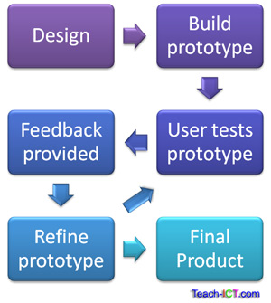

Prototüüpimine on lihtne näidisversioon mida kasutatakse disaini katsetamiseks ja ideede demonstreerimiseks.
Prototüüpimist vüib teha mitmel erineval põhimõttel - nt ühekordne prototüüpimine (Throw away prototyping), evolutsiooniline prototüüpimine
(Evolutionary prototyping), lisanduv prototüüpimine(incremental prototyping).
Ühekordne prototüüpimine - prototüüp mis likvideeritakse peale kasutust. Kas siis selle tõttu, et antud prototüübi baas ei
sobi edasiseks arenduseks, funktsioonid ei tööta või see ei vasta muudele kvaliteedi nõuetele.
Evolutsiooniline prototüüpimine - Prototüübi ideed näidatakse kasutajale. Kasutaja annab tagasisidet ja annab ideid idee täiustamiseks.
Prototüüp läbib evolutsioonilist lähenemist kuniks antud tagasiside on rahuldatud.

Inkrementaalne prototüüpimine - Inkrementaalset prototüüpimist kasutatakse kui tarkvara koosneb mitmest moodulist ja komponendist mis on häguselt seotud teineteisega.
Inkrementaalses prototüüpimisel tehakse mitu väikest prototüüpi paraleelselt. Kõiki prototüüpe hinnatakse eraldi
ning seejärel tervikuna. Riskiks on prototüüpide erinevus ja tunnetus. Need ei pruugi ühtida.
Prototüübi etapid võivad erineda vastavalt sellele millist prototüübi meetodit kasutatakse kuid üldstruktuur kipub samaks jääma.
Uuritakse mida klient tahab väga pinnapealselt ning hakatakse prototüüpi arendama. Väga algne ja väga pinnapealne protsess.
Keskendub visuaalsele osale (sisend, väljund, vormid jms). Uuritakse mis klient antud asjast arvab ja mida oleks vaja üle teha.
Parandatakse prototüüpi kuniks klient on rahul sellega. Arendajad saavad teada rohkem kliendi soovidest ja realiseerivad selle.

| Head küljed | Halvad küljed |
|---|---|
| Parem kasutusmugavus | Liigne arendamisaeg - võib juhtuda, et jäädakse prototüüpi tweakima liialt kauaks ja see omakorda kahjustab arendamis kiirust päris projektil. |
| Täpsem ühildumine kasutaja tegelike vajadustega | Prototüüpimisel on rahaline kahju. Mille käigus reaalne projekt ei arene absoluutselt. |
| Parem kvaliteet ja hooldatavus | Kasutaja segadus - vahepeal luuakse feature'id mis on prototüübis olemas aga lõpuks eemaldatakse lõppprojektis, antud olukord võib klienti panna pettuma. |
| Väiksem vaev arendamisel | Liigne fookus ühele süsteemi osale, ülejäänud projektiosad võivad jääda tahaplaanile |